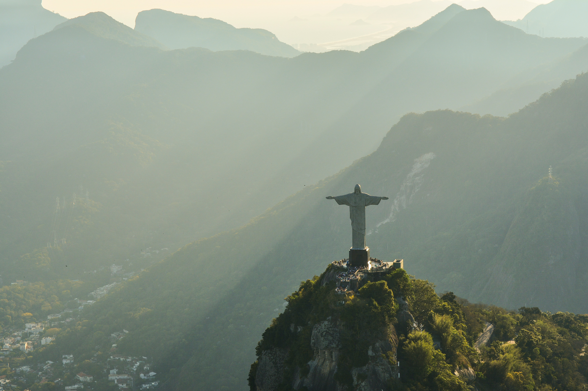
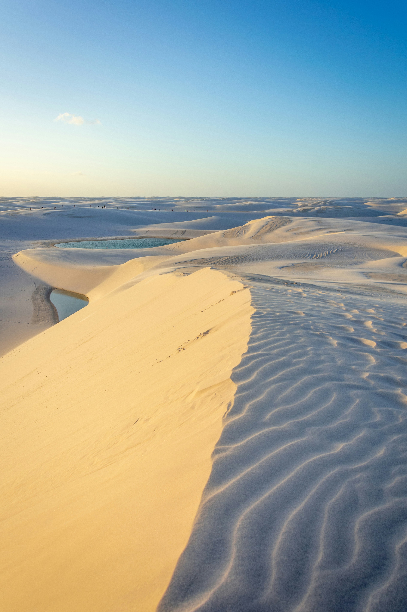
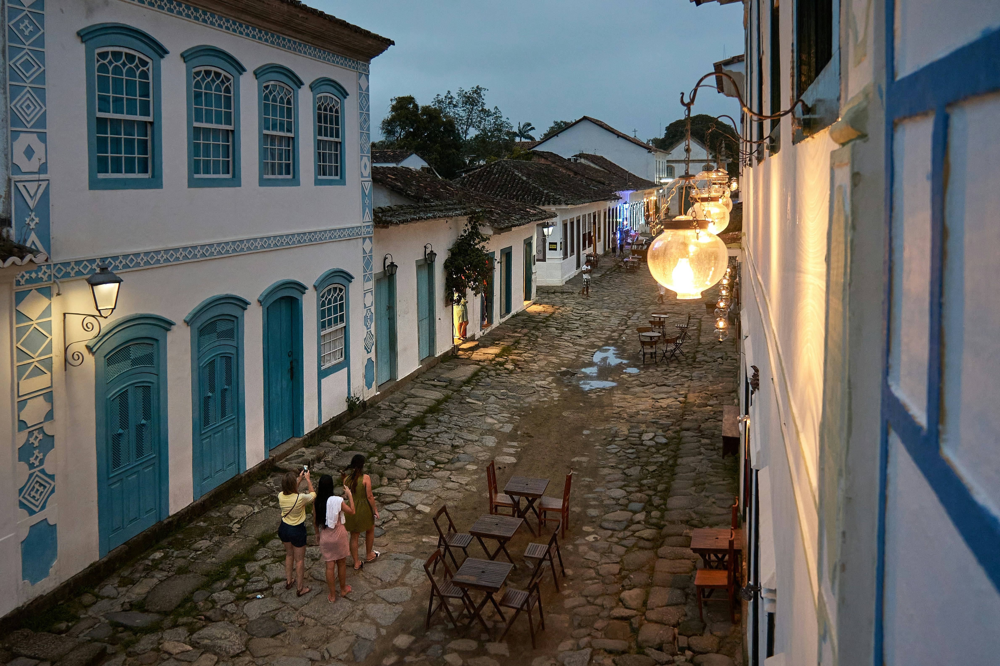
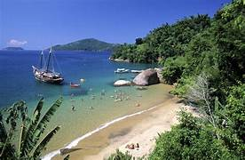
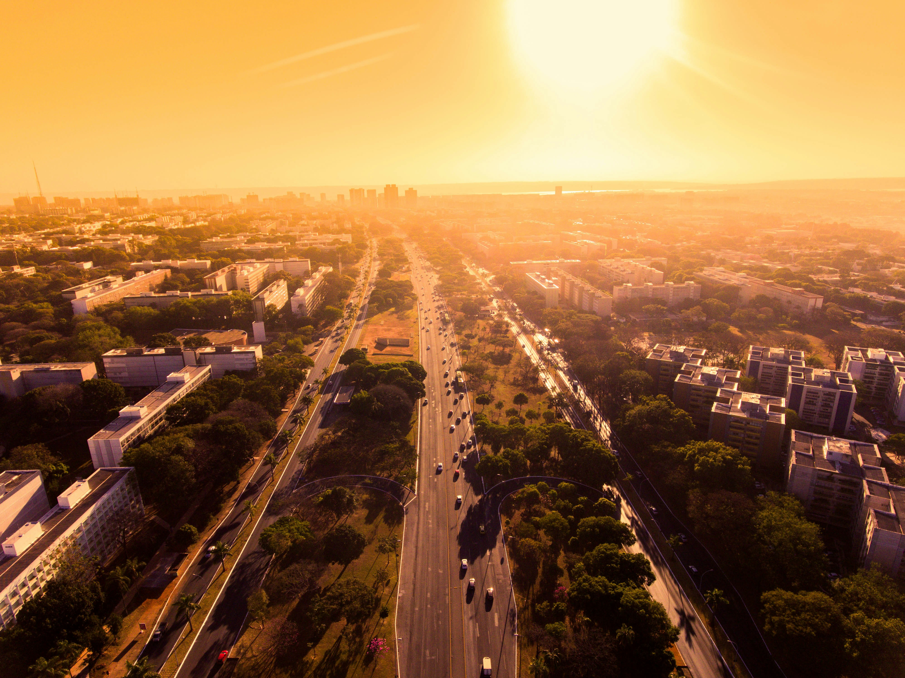

<!DOCTYPE html>
<html lang="en">
<head>
    <meta charset="UTF-8">
    <meta name="viewport" content="width=device-width, initial-scale=1.0">
    <title>Document</title>
</head>
<body>
    
</body>
</html>

<html lang="en">

<head>

   <meta charset="UTF-8">

   <meta name="viewport" content="width=device-width, initial-scale=1.0">

   <title>A journey in Brazil </title>

   <link rel="stylesheet" href="style.css">

</head>

<body>

   <header>

       <h1>A journey in Brazil </h1>

       <p>Brazil, a land of incredible diversity and breathtaking beauty! Located in South America, Brazil is much more than just a travel destination, it's a true melting pot of cultures, landscapes, and unique experiences. </p>

       <a href="https://bresilmonamour.fr/" target="_blank"> More information </a>

   </header>

   <main>

       <section id="secondSection">

           <div>

               <h2>Rio de Janeiro, an all-in-one city</h2>

               <p>Rio invites us to combine well-being with beaches where warm sand and <br>crystalline waves invite relaxation and leisure, discoveries with<br> one of the wonders of the world, the Christ the Redeemer statue,<br> and entertainment with the bohemian neighborhoods of Santa Teresa<br> and Lapa, alive with music, art, and nightlife. One thing <br>not to miss is obviously Rio's Carnival, a festival of colors, music,<br> and dance that brings the city to life every year.</p>
               
               <div>

                   

                   

               </div>

           </div>

       </section> <!-- END OF SECTION 2-->


       <section>

           <h2>The North and its heavens like the Lençois</h2>

           

       </section> <!-- END OF SECTION 3-->


       <section id="section4">

           <h2>So many other parts to discover </h2>

           <p>There is a lot more to explore. The vast expanses of the Amazon, the planet's green lung, where you can discover exceptional biodiversity, fascinating indigenous tribes, and lush landscapes as far as the eye can see, are a must-see. Or perhaps you prefer to relax on the paradisiacal beaches of the famous Costa Verde, where golden sand meets the waters of the Atlantic Ocean. You could also immerse yourself in the colonial history of Paraty, or explore the architectural wonders of Brasília, the country's modern and futuristic capital.</p> 

       <div>

               

               

               

       </div>

       </section> <!--END OF SECTION 4-->

   </main>


   <footer>


   </footer>

  

</body>

</html>